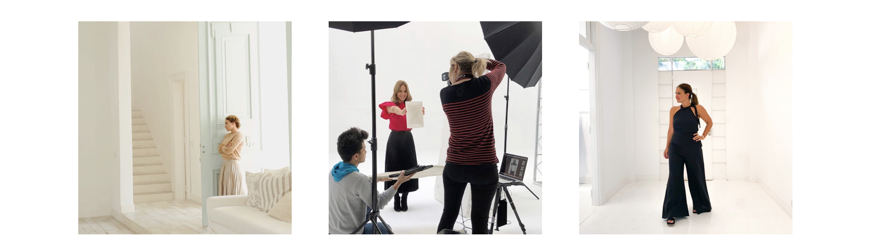

Marina
Conoce a Marina Maiztegui, una talentosa creativa que vive en Buenos Aires, Argentina.Después de estudiar publicidad y trabajar como diseñadora de vestuario, Marina decidió estudiar diseño de interiores. La base estética y su habilidad para transformar espacios se convirtieron en el pilar de su emprendimientos creativo y la llevaron a fundar su propia empresa "Solo para Mi". Esta iniciativa le permitió diseñar, producir y curar una exquisita colección de muebles y diversos artículos para el hogar. Impulsada por el deseo de mostrar sus productos, Marina se embarcó en una aventura creativa, comenzando con un blog y expandiéndose a Instagram. A medida que su contenido ganaba reconocimiento, otras empresas buscaron su experiencia, abriendo puertas a nuevas oportunidades en creación de contenido y estilismo, trabajando para otras marcas, revistas y libros. La búsqueda artística de Marina encontró expresión a través de la cerámica, la pintura y el grabado. Su objetivo es crear conciencia sobre la preservación de la naturaleza, especialmente de las playas y los mares. Marina comparte su conocimiento y pasión a través de la enseñanza. Sus clases de fotografía y estilismo empoderan a otros para aprovechar su creatividad, dominar la fotografía con teléfonos celulares y aprovechar efectivamente las redes sociales para la expresión artística.